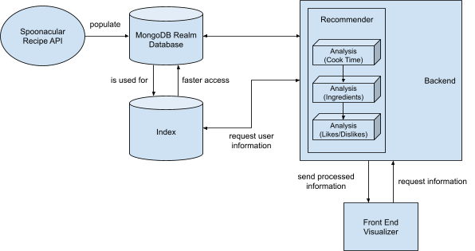
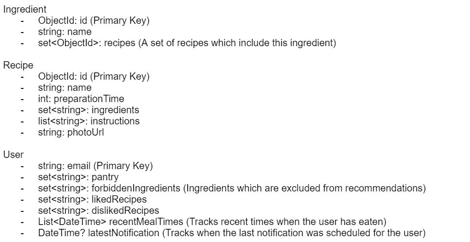

Movie Browsing Website
Mobile development - 2019
We built a system that recommends meals to users based on several factors, such as:
- The ingredients the user has access to
- Meals the user has previously liked/disliked
- The time it takes to prepare a meal
- The time the user eats
Using this recommendation system, we send well-timed notifications to the user so that they have sufficient time to prepare the recommended recipe.
The data sources used to give recommendations and notifications are as follows:
Personal Model Data Sources:
- User's pantry (user input using a search bar)
- Estimated dining time (automatically calculated when user begins preparing a recipe)
- Recipe likes/dislikes (user input after preparing a recipe)
Context Data Sources:
- Current time of day (taken from user's device)
In order to recommend recipes, we first determine a body of recipes to choose from. Due to our small dataset, we opted to start with every recipe, but this quantity can easily be reduced. For example, by using a property inside our ingredient model (similar to an inverted index), we are able to quickly filter the recipes to only those that contain ingredients the user already has. Next, we score each selected recipe and rank them. The recipes are scored based on the percentage of ingredients already owned by the user, the amount of time the recipe will take to prepare, and the similarity or dissimilarity of the recipe to others the user has liked/disliked. The weights for each of these factors can easily be adjusted. Additionally, if a recipe contains an ingredient that the user cannot consume, the recipe is given a score of 0. Our function limits the number of recommendations returned (to 10 by default) and provides a sorted list of recommendations.
Architecture-wise, information about users, ingredients, and recipes is stored in MongoDB Realm. Recommendations are processed on the user’s device using Dart in the current implementation.
Frontend:
The frontend is broken up into two main components: the recipes page and the pantry page. The pantry page can be used by the user to manage a list of ingredients called their “pantry.” By using a search bar, they can lookup ingredients by name and add them to or remove them from their pantry. The recipe page allows users to browse various recipes. There are three photo carousels which show a user’s recommended, liked, and disliked recipes. Upon tapping on a recipe, the user can view the preparation time and necessary ingredients, then tap a button to begin to begin cooking the recipe. Once here, the user can see its instructions and like/dislike the recipe. In addition to these pages, the user can also manually schedule notifications from the recipe page. Interacting with the various components on these pages updates the user’s personal model in the background to refine recommendations and notifications. While the app is open, a background routine automatically schedules notifications with recommendations for the users. The frontend implements most of the implemented functions, although a few areas could have expanded functionality. For instance, the recommender is able to filter out recipes with specified ingredients, but there isn’t currently a frontend interface for specifying these ingredients.
Data Collection:
- Pantry: all the ingredients that the user currently has
- Liked Recipes: recipes that the user has liked
- Disliked Recipes: recipes that the user has disliked
- Current time: used to determine when to show notifications
- Times when the user eats: used to adjust the scheduling of push notifications
- Recipe dataset: recipes from Spoonacular API
Static Data:
Live Data:
Backend:
Our application uses a MongoDB Realm database with Atlas to store information about Users, Recipes, and Ingredients. This way, we maintain historical information even if the app is closed. Anytime a User interacts with something, their personal model in the database is updated.
The User model consists of identifying information, information used to schedule notifications, and information about recipe preferences. The Recipe model consists of all the information about the recipe that the User needs to prepare it and a photo. The Ingredient model stores a set of Recipes that use it, which can act as an inverted index.
